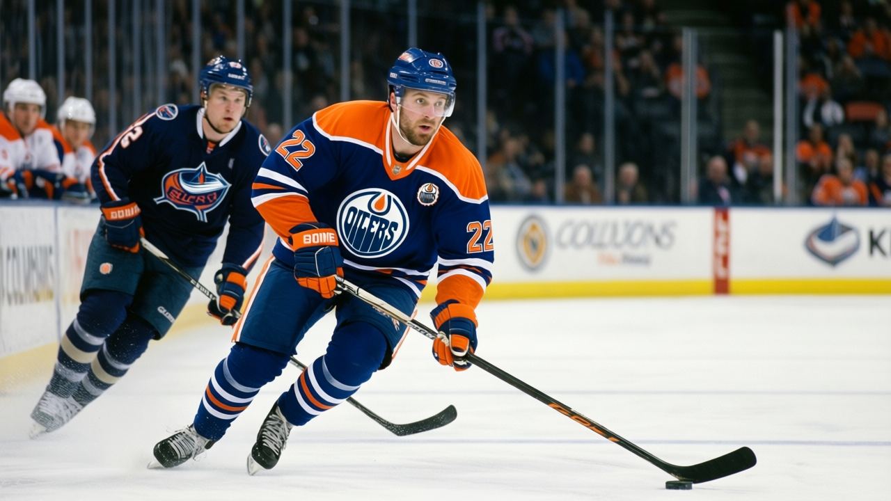

The Blaine Rankings, Week 7: the Oilers buy the second-cheapest point in the league, and the goaltending says they are borrowing from next spring
Edmonton sits 10th in the league at 41 points on a $36.81M payroll, which puts the cost per point at $0.90M, second only to Vancouver's $0.83M. The Oilers have scored 124 goals and conceded 134 in 32 games. Every other t…


 Howard Blaine·5 min read
Howard Blaine·5 min read